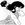

|

Kirinin
Author of 14 Stories |
Disclaimer: I'm not worthy... but I'm using the characters anyway.
CHAPTER FOURTEEN / EPILOGUE
Genma was used to grasping the unseen. You don't have a gender-changing son or your own personal panda suit without doing that on a more or less daily basis. You don't develop a technique like the Umi-Sen Ken without doing it, either. And he'd surely had numerous brushes with the unknown, even magic, on occasion. As such, it wasn't too difficult to come to the conclusion that the blue-haired Tendo girl was indeed his only son, whom he had, until very recently, thought deceased.
In a rare flash of insight, he imagined this was how Ukyo must have felt about Ranma. Being denied revenge was a strange experience. It seemed as though his sense of purpose had been pulled neatly out from under him. He also couldn't tell if he wanted to beat the truth out of his son or leave the boy alone until he came to his senses.
The 'boy' was staring at the sunrise with a blank expression on her face. Finally the two schools are united, he thought, sighing deeply. After a moment he stood, making his way to sit near her, hoping to lend some comfort from his sheer presence.
Akane stirred, coming to herself, but remained silent for a moment. A small tremor ran through her.
Wondering what was coming, Genma eyed her warily. Akane looked up at him, her eyes filled with tears. Turning suddenly, she buried her face into the sleeve of his gi and wailed.
Genma twitched. This was new. This was... a girl. Perhaps it wasn't Ranma after all? But no, there was no mistaking it: this child really was some strange combination of his Ranma and the Tendo girl. Awkwardly, he draped an arm around her. She seemed to take this as encouragement, and wailed harder.
Finally the crying spell wore down, and the girl called Akane Tendo drew away from the man who she supposed was her father. "I'm s-s-sorry," she sniffled. "I didn't know. I'm stupid, dad, I'm so stupid!"
Genma frowned; Ranma had never called him 'dad', either. "You're not stupid," he replied. "You attempted to fulfill your honor as best you could, given the situation."
Akane shook her head. "Stupid," she repeated. "Couldn't even save her! Me. Her. God, I'm so messed up!" Her hands flew to her mouth in sudden surprise.
"What is it?" Genma inquired, becoming worried as the girl's eyes had begun to develop that glazed look again.
"Dad, I'm dating a boy," she announced in a shocked and almost scandalized tone of voice. "I... I promised I'd tell him everything about Ranma... what do I do?"
Genma shook his head. "If there's one thing I've ever learned from raising you, it's not to make promises I can't keep."
Akane glared at him through her tears. "Don't be castin' stones, pops," she admonished.
Genma blinked. Suddenly she was his Ranma all over again. "I..." he searched for something to say, all questions about this boy flying from his mind in surprise. "W-what are you going to tell... your father?"
Akane's lips thinned, and the Ranma-Saotome-never-loses look adorned her features. It wasn't Ranma-Saotome-always-wins, Akane reminded herself, remembering her efforts to recall the phrase. And if there was a difference between always winning and never losing, Akane sure had found it.
"I'm not going to tell him a thing," she replied. "And neither are you. Swear on... geez, what'll work for a layabout like you?"
Genma growled, but he couldn't summon up a retort. Now that his child was... well, a girl... could he even fight her properly? "I swear," he finally replied. "On the School, I suppose. Though it's going to be hard to keep something this big from an old friend like Tendo."
"Good enough," Akane replied. "I did this for a reason, and I still remember why." Her expression firmed again, and when she spoke it was with a different voice, a voice that the Nerimans hadn't heard in nearly seven months. It was Akane's voice. Not tinted with anything but Akane. "I am going to go home to Japan, and finish school, and run the dojo," she said clearly. Her gaze latched onto her father again and she raised an eyebrow. "No problem with that, is there pops?"
Genma sighed. "I was hoping you might come on a training trip. You're sorely out of practice. Not to mention the fact that you still happen to be wanted for murder in Japan."
Akane blinked in surprise, wondering how on earth she could have managed to forget that. "As for the martial arts, did I or did I not hold my own against you for quite some time? Or was that just my messed up memory again? Huh?"
Genma felt a smile tug at his lips. "Still."
"Honestly," Akane sighed, gazing upwards. "D'you really think Daddy would agree to that one? His precious little girl off on a training trip with the man who threw his son into a pit of starving c-... a pit of starving ca... A pit of..." Akane trailed off, biting off a curse. "You jerk! Now you've done it to us both!"
"Maybe he can be convinced," Genma offered, tenaciously clinging to the previous subject. "Especially if the other option may be his precious baby girl in jail."
A smile was making its way across Akane's features, too. "Maybe we can stop there first and then head out again." She paused. "You're not pissed off that you'd have to fight a weak girl?" she inquired doubtfully.
Genma cleared his throat. "I might have emphasized that a bit much in our training, it's true; but there was a reason. You see, your mother is somewhat... domineering. I wanted you to be able to stand up to your wife, so you'd have a more... eh heh... equitable marriage."
Akane stared at him, a slightly disbelieving expression flitting behind her eyes. "Really? You don't believe in that stuff at all?"
Well, not much. "Of course not." Genma shrugged dismissively. "Above all, I was concerned about Nodoka-chan slicing our necks; if I pushed you a little, it was mostly for safety's sake." He paused. "Ranma... Akane..." Genma trailed off. "Girl. Form is mutable. The two of us know it better than anyone. And so... I am overjoyed to see you in one piece. No matter what."
Akane's smile reappeared, replacing her hesitance. "I sorta guessed when you came at me for 'killing your only son'."
Genma shrugged unconcernedly. "Honor."
"You're an honorless dog and you know it," she replied, but she grabbed ahold of his arm and hugged it to her, leaning a bit on the older martial artist.
A bemused smile settled on Genma's features. He could get used to this.
Akane heaved the pack up on her back a little bit more. "I don't understand why I have to carry your stuff," she shot to Genma over her shoulder.
"Stop complaining," Ryoga growled. "For crying out loud, it must be a quarter of what I usually cart around."
"But it's not fair," she whined companionably, teasing him for the fun of it. "You have super-strength. What do I have? Charm? I can't charm the cookware."
Genma chuckled. "You could try." He was learning how to appreciate his new daughter's sense of humor, which employed Ranma's defiant wit and Akane's cheerful stubbornness. Having a daughter was different from having a son, but so far Genma was enjoying it just as much. "Besides, Akane," he added, "you'll have to work if you want to become as strong as Ryoga."
Akane grumbled good-naturedly under her breath, something about pigs and strength, but beyond that she was quiet. She was mostly quiet, actually- her mind was still awhirl, spinning like a child's top. It was a job, attempting to have all those memories accessible at a moment's notice, like a librarian informed she had to house double the number of books she usually did in the same amount of space. By lunchtime. The organization was problematic, too. Akane kept confusing to whom her memories had originally belonged. This morning she'd actually thought Mrs. Tendo was alive and Mrs. Saotome was dead, before she realized she'd worn a black dress to the funeral!
Other, more disturbing things had become painfully clear, as well-things she could have wished were resolved earlier. Ranma and Akane had fought, they had bickered, and they had said and done hurtful things to one another.
And they loved each other with an almost blinding devotion. Neither had ever been fully aware of the feelings of the other. P-chan was another thing, one she'd sort of been aware of before her awakening. Every past problem was gradually solved, every misunderstanding exposed. Her double past was an origami shape, complex and sharp, that continued to unfold until its true simplicity was revealed.
Yet she was more at peace than she remembered being for a long time. As Ranma, she had been unable to forgive herself for allowing Akane to die. As Akane, she had been preoccupied terribly with the fact that she might have had something to do with Ranma's death. In her current state, she could hardly do either without becoming terribly confused. So instead, she walked and complained, cracked the occasional joke, and wondered what in God's name she'd say to Hiroshi.
Nabiki swept her inside the house with a bear hug. "I'm so glad..." she began. "Mr. Saotome?" she exclaimed. "And... Ryoga?"
The two men in question nodded, as though they stopped by regularly and the fact that they'd returned the missing Tendo girl was no big deal. Well, they both USED to hang around a lot, Akane thought to herself amicably. "Come on, Nabiki, let us in. I'm seriously starvin'."
Kasumi flitted into the room and treated the guests to a repeat of Nabiki's performance. Then she added, for good measure, "Akane! Where in the name of all the kami have you been?"
Akane attempted to look casual and failed miserably. "Uhm... went on a... training mission?" she hazarded.
Nabiki stared at her like she'd grown an extra head, and Kasumi blinked uncertainly. Akane giggled. "You two look nervous. Don't worry, Daddy ain't going to engage us. I hope."
Genma sighed and Ryoga whapped her upside the head.
"Ow," Akane complained, rubbing the back of her neck. She turned to face Kasumi, who looked as close as she came to murderous; Nabiki's left eyebrow began to twitch. Akane headed them off, though. "Don't worry, I'm a lot stronger, now. That was a love pat."
Ryoga blushed and announced a desire to find the bathroom. "I'll take you," Nabiki offered. Akane was sure she wanted some info from the gullible lost boy first. She sighed, rolling her eyes as Ryoga glanced her way before heading off, as though to make certain she'd be all right where she was. Ryoga had been bugging her of late. It was like he didn't know whether he should kiss her for being Akane or hit her for being Ranma. He compromised by alternating between treating her like a sparring partner and casting her lovesick looks.
Akane let Nabiki lead Ryoga away, despite knowing what the other girl was up to. Nabiki had helped her, after all, so she probably just wanted to hear Ryoga say she hadn't killed Ranma, or ask if Akane was really as okay as she seemed. Kasumi was being her usual wonderful self, disappearing into the kitchen after a moment to fix them something. "Akane, dear, would you like to help?" she inquired at the kitchen door.
Akane blinked, then called out to her older sister, "Oh, no, oneechan, I can't cook worth a tinker's dam."
A loud thud sounded from the kitchen.
The next morning Akane attempted to slip into her uniform, but it no longer fit her properly. Genma had already begun training her, and she was slimmer in some places and more muscular in others. She sighed. One of the many things that had to change.
Nabiki slipped into Akane's room and shut the door behind her. "You owe me big."
Akane smiled warmly at her older sister. "Oneechan, I've owed you big for some time now."
Nabiki's lips slowly widened to form a grin. "Don't you get it? I've figured it out!"
Akane's expression fell off her features like it had been dropped. "Huh?"
"Sure-your sister's a baka sometimes, you know that? It's so obvious!"
"Un... it is?" Akane tugged at her uniform, futilely attempting to make it stay where she wanted, so that she didn't have to look at Nabiki.
"Sure-it makes perfect sense. For one thing, it's in character for Ranma, far more than it would be for him to have taken his own life. Something happened in which Ranma, Ryoga, or you, employed the Shi Shi Hokodan." She nodded gravely. "I studied some of my old footage and figured out that's the attack that ended his life."
Akane nodded. "And?"
"And you were in danger from the attack. Ranma sacrificed himself for you, Akane. It's the only thing that makes sense. It explains your DNA on Ranma's clothing, as well as the blood that's yours, which looks like it must have been from shrapnel. Ranma knocked you out of the way."
Akane breathed a relieved sigh, but at the same time, a very small smile graced her features. It was a singularly... fitting explanation. She didn't want to be conceited, but she would much rather Ranma have a hero's death than be a murder victim. "You can prove it?"
"All that matters is reasonable doubt, darling, and I can sure do that. Your doctors could attest under oath that you were truly in shock when you came back to us in Japan, that you were not faking in any way. Ryoga blabbed to me in the bathroom that Ranma's death was an accident of some kind-and if we could get him to talk sense in front of a large group of people, he'd back you up too, I'm sure of it. I think when he talked to you that night, accusing you, he was simply disturbed over the death."
"That sounds about right," Akane replied dazedly. Her expression shifted until it became beautifully warm. "Nabiki..."
"Yeah, yeah, eternally grateful, all of that," Nabiki replied impatiently, but there was a sparkle to her eyes that Akane hadn't seen in ages. The older girl winked. "Think I'm gonna be a lawyer," she confided in a soft, triumphant voice.
"AKANE!" Genma's voice floated up from downstairs. "TIME FOR SCHOOL!"
"Coming pops!" Akane shot Nabiki an apologetic look for running off so fast, not seeming to notice that she had misspoken. "Listen, oneechan, I owe you forever!" She slipped out the door, not noticing the shell-shocked look in her sister's eyes as the pieces of the puzzle suddenly and completely rearranged themselves in her mind.
Akane slipped outside, wearing a yellow shirt and extremely familiar looking pair of black pants. For a moment, she gazed appraisingly at the sidewalk before her eyes slid up, as if pulled, to the familiar fence. Her feet left the ground and she landed softly on the railing.
"Akane!" Hiroshi ran up to her, waving one arm excitedly.
"Hiroshi, man!" Akane called. Her stomach did a tiny flip even as she stood almost perfectly still.
"I was worried about you. What happened?"
"D-don't worry about it for now," Akane said, hesitance coloring her voice. "I swear I'll tell you all about it soon, okay?" She paused, and took a deep breath. "Is it alright if for now... we're just friends?"
Hiroshi shrugged. "I really am a bad kisser, then," he replied.
"Average," Akane replied, examining the sky. She giggled. "Honestly. Let's just tone it down for a while, okay?"
"That's alright," he replied. "But leave me waiting for long and I might get as persistent as Kuno."
"Impossible," she assured him.
Hiroshi looked up at her, slightly puzzled. "What's with the outfit, anyway?"
Akane smiled. "Wanted something a little more... me," she replied. She made a face. "Besides, I've grown out of my uniform."
"Are you going to come down from there?" Hiroshi queried anxiously. "You know that makes me nervous as hell."
"Nobody ain't ever gonna clip my wings, Hiro," she told him, holding her arms out to the side to feel the wind rush past her body.
Gods it was good to be alive.
AUTHOR'S NOTES:
Damn. If I thought it was difficult to re-write Ch 13...
I kept on thinking of truly elaborate alternate explanations for Nabiki to come up with until I realized the most obvious conclusion. Well, duh. Kirinin no baka!
This begs for a sequel, but I refuse to do one unless I actually have plot... as tempting as it is to simply see how Akane/Ranma gets along, and how Nabiki deals with what she knows, or suspects. Well, minna-san? What do you think?
I MUST give thanks to:
Janete, for putting up with me and my pickiness... and for being my typist... and Janete again for always giving me advice and for allowing me to gauge reader reactions and torture her with my plot. Finally, thanks to everybody who has read this story. Your support has overwhelmed me! :)
Send email, death threats and lovings to:

|
Review this Chapter |